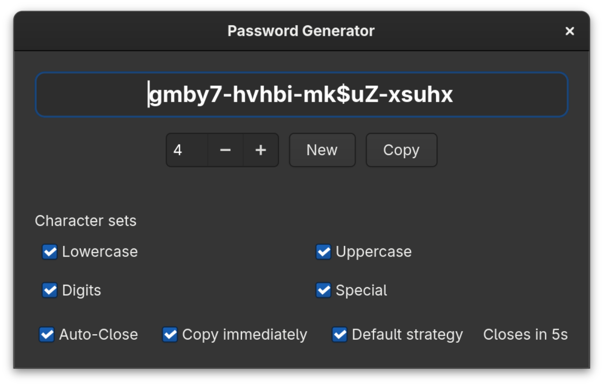
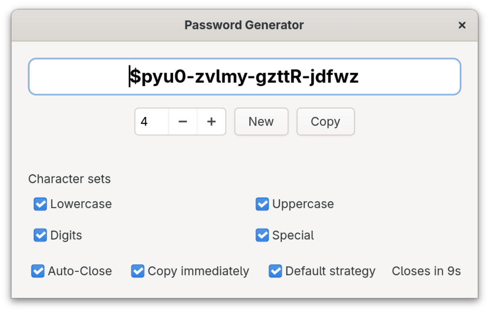

Free software · GNOME · fully offline
Strong password. Yours alone.
Password Generator is a native GTK4 app for GNOME. It creates cryptographically strong passwords right on your computer — in groups of five, one click away from your clipboard. No network. No cloud. No telemetry.
hT4k#-qW9m!-Lp2xZ
Strength
The exact value, a rating and the estimated time for a brute-force attack — with the assumption spelled out (10¹² guesses/s, fast hash), not as a sales pitch.
01 Features
Your password stays on your computer.
Everything runs locally in a GTK4 app packaged as a Flatpak. There is no server that could store, lose or share anything — and nothing you have to set up for that.


100% offline
No network access — neither in the Flatpak nor in the code. No accounts, no cloud, no telemetry: there is simply nothing that could be lost, stolen or sold.
Cryptographic randomness
Every character comes from the operating system’s random number generator (OsRng) — the same source encryption software draws its keys from.
Groups of five
abcde-FGHIJ-12345 is easier to read, dictate and type than a jumble of characters — and you can tell the length at a glance.
Honest strength
Exact entropy, a rating and the estimated attack time. The assumption behind it (10¹² guesses/s, fast hash) is shown — and the default strategy is never rated stronger than it is.
One click, done
The password goes straight to the clipboard, at startup if you like, with visible confirmation. Then the window closes by itself: the password leaves the screen but can still be pasted.
Fits any policy
Lowercase, uppercase, digits and special characters can each be turned off. The default strategy guarantees at least one uppercase letter, one digit and one special character.
Eight languages
English, French, German, Italian, Japanese, Spanish, Swedish and Ukrainian — the interface follows your system language.
Feels at home
Light or dark, following your system setting. Enter generates a new password, Ctrl+W closes the window, Ctrl+Q quits — no mouse needed.
02 Security
Generated locally, stored nowhere.
The generator is deliberately small: GTK4 for the interface, rand for randomness, a few Wayland libraries for the clipboard. No accounts, no outside connections, no background services. The key properties:
a.No network
The Flatpak does not request --share=network, and the code contains no network access. Even if it wanted to, the generator could not send anything.
b.No logs, no history
Passwords never appear on the console or in the system journal and are never written to disk. Only your settings are saved.
c.Briefly on screen
With “Auto-Close” the app quits after 10 seconds; a click into the window pauses the countdown. The password stays on the clipboard until you copy something else — if you use a clipboard history, delete it there.
d.Verifiable
Open source under CC BY-SA 4.0: generation, entropy calculation and strength estimate can be checked in the code and are covered by tests.
Contact: https://github.com/danst0/passwordgenerator/security/advisories/new Expires: 2027-10-17T00:00:00.000Z Policy: https://github.com/danst0/passwordgenerator/blob/main/SECURITY.md Preferred-Languages: en, de Canonical: https://passwort.dumke.me/.well-known/security.txt
Found a vulnerability? Please report it privately via GitHub, not as a public issue. I usually acknowledge reports within 72 hours; details are published once a fix is out.
03 Install
One command, and it’s there.
Flathub
The recommended way on any Linux distribution: currently on the GNOME 50 runtime and updated automatically with every release.
From source
With Rust and the GTK4 development libraries — for anyone who wants to build or modify it themselves.
Source code on GitHub